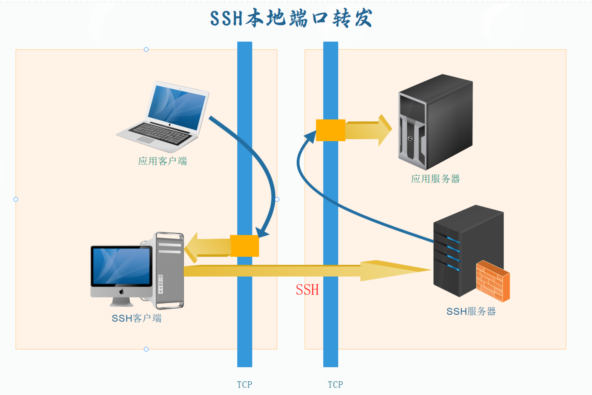
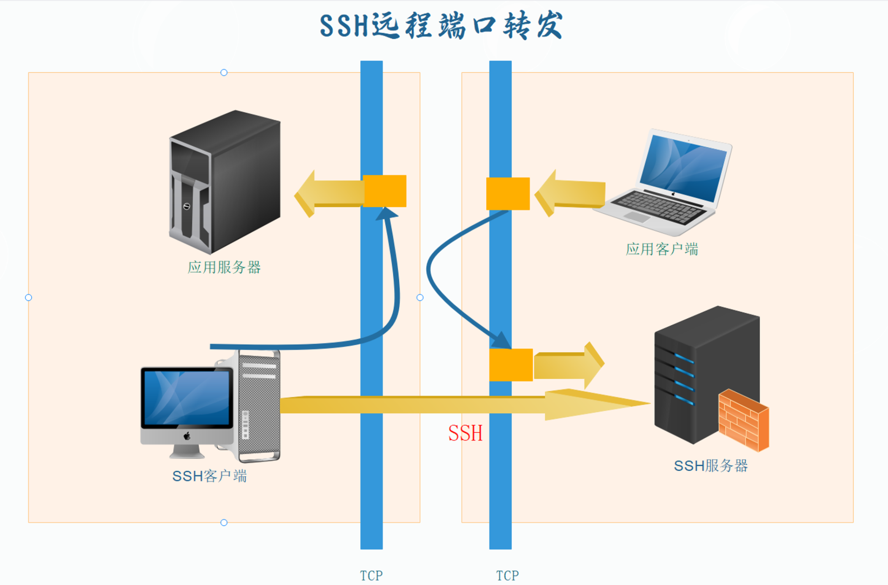

笔者最近在准备渗透学习，需要先了解基础的ssh转发知识。
知乎-彻底搞懂SSH端口转发命令
本地端口转发
A无法访问C的某个端口，但是B 可以访问C的这个端口，可以将主机A对某个端口的访问转发给主机B，让B对另一主机C指定端口Z访问
ssh -L 主机A端口X:主机C:主机C端口Z username@hostname
- 绑定特定地址的请求
ssh -L [收听接口:]收听端口:目标主机:目标端口 username@hostname
是本地端口转发的完整命令形式
命令中方括号内的部分，即第一个参数可以不写；它的默认值一般是0.0.0.0（OpenSSH客户端配置文件「ssh_config」中「GatewayPorts」选项的值一般为「yes」），意味着SSH隧道会收听所有接口，接受来自任何地址的应用访问请求并进行转发。而如果在此处填写了绑定地址（bind address），SSH隧道连接就会只处理来自绑定地址的应用请求，而对其他地址发来的请求置之不理；
例如在此处填写127.0.0.1，即可实现只有来自主机A本机的应用请求才被SSH隧道转发的效果。
收听接口是面向 A 的，因此对应的 收听端口 应该是我们期望的 A 的端口
我们用一张图来概括这个大致的过程
左侧为 HOST A ，右侧是 Host B

例子
引自https://zhuanlan.zhihu.com/p/148825449
0x1 利用可以访问外网的主机访问不能访问外网的主机
主机B与主机C处于同一内网中，主机B能够与外界联系而主机C不能。这时不处于内网中的主机A如果想要访问主机C，就可以通过SSH连接主机B＋端口转发来进行。即：
A→C，某服务不可直连
B→C，某服务可直连
A→B，SSH可直连
任务目标：A→B→C，某服务的间接连接
台式机B上运行着虚拟机C，虚拟机使用虚拟机软件搭建的虚拟网络与其宿主——主机B相连接，但在主机B以外无法直接访问该虚拟网络。想要通过SSH，用与台式机B处于同一WiFi下的笔记本A来远程控制虚拟机C，（在A上）执行端口转发命令：
ssh -L 22022:10.0.2.15:22 desktop_user@192.168.1.11 # cmd.1-1
其中，22022号端口是随便选的一个没被占用的端口；192.168.1.11是台式机B在WiFi中的IP；desktop_user是主机B上的用户名；10.0.2.15是虚拟机C在主机B为其搭建的虚拟网络中的IP；22号端口是默认的SSH端口。已知virtual_user是虚拟机C上的用户名，这时在笔记本A上执行应用的访问请求命令：
ssh -p 22022 virtual_user@localhost # cmd.1-2
我们在笔记本A上以SSH协议访问本机（localhost）的22022号端口，这个请求就像通过了隧道（SSH隧道）一样抵达台式机B，台式机B则把这个请求变为对虚拟机C的22号端口的访问，并为A返回结果。其中，使用「-p」旗标是为了访问主机A的特定端口而不是SSH默认的22号端口；由于我们在主机A上执行命令，A管自己叫localhost，假如在其他主机上执行则需相应地改为主机A的域名或IP等他们对A的称呼。
cmd.1-2中我们是将SSH当作普通应用使用的。参考Fig.1，cmd.1-1在A与B之间建立SSH隧道，此时A上的SSH客户端和B上的SSH服务器对应图中的SSH Client和SSH Server；cmd.1-2则表达应用的访问请求，此时A上的SSH客户端和C上的SSH服务器对应图中的application client和application server。
以上cmd.1-1和cmd.1-2合起来实际是想（在A上）进行：
ssh -p 22 virtual_user@10.0.2.15 # cmd.1-3
0x2 绕过防火墙
防火墙阻止了主机A对主机B一些端口的连接，但主机B仍有部分端口（含SSH）是对主机A开放的。这时主机A如果需要访问主机B上被防火墙阻挡的端口，就可以通过SSH连接主机B＋端口转发来进行。需注意，这时所谓的主机C就是主机B。即：
A→B，某服务不可直连
B→B，某服务可直连
A→B，SSH可直连
任务目标：A→B→B，某服务的间接连接
某某云的云服务器B默认的防火墙设置仅开放了22号端口，其他入方向的访问都被屏蔽了。我们为云服务器B安装了桌面环境，现在想要在自己的计算机A上，通过VNC远程控制云服务器B的桌面。（在A上）执行端口转发命令：
ssh -L 5920:localhost:5901 cloud_user@server.example.com # cmd.2-1
因为C就是B自己，所以C的位置填localhost；5920随便选；5901是云服务器B上VNC服务进程收听的端口；cloud_user是B上的用户名；http://server.example.com是B的域名，换成公网IP也行。
下面在计算机A上打开RealVNC VNC Viewer（VNC客户端），输入VNC服务器地址：localhost:20
然后这个过程就会经过 20->5920->5901
远程端口转发

左侧为 HOST A ，右侧是 Host B
现在 A 建立了到 B 的ssh连接, C 上的某个端口提供了服务，但是 B 无法直接访问 C 或者该端口，因此我们在有 A->B 这一ssh连接的前提下，可以用远程端口转发
- 注：比较两张图我们可以发现，采取远程端口转发或本地端口转发，取决于SSH连接建立的方向
对于一个 A->B 的连接，执行命令、运行SSH客户端的主机，我们称为本地主机A【Host A】；接收连接请求、运行SSH服务器的主机，我们称为远程主机B【Host B】。通过密码或密钥等方式验证后，SSH连接建立，主机A可以使用命令行对主机B实施远程控制。请求是在 HOST A 发出，被转发走的，是 本地转发 ，请求是在 Host B 发出的，是 远程转发。
需注意，此时访问请求在主机B一侧发生，而SSH连接的方向却没有变化，仍是由A到B的。因此「本地与远程端口转发互为镜像」的说法并不完全准确；严格意义上的镜像，SSH连接也要变为由B到A，那时则应该是在B上采用本地端口转发。可以看出，采取哪种端口转发主要取决于SSH连接建立的方向。
因此，远程端口转发是：我们在 Host B 上有一个对制定端口 X 的请求，经过远程端口转发交给了主机 A ，由主机 A 对另一个主机 C 的端口 Y 进行请求。
ssh -R 主机B端口Y:主机C:主机C端口Z username@hostnam
将对B:Y的访问转变成对C:Z的访问
示例
假设以下条件：
- Host B 上的端口 X 为 8080。
- 目标主机 C 的地址为 192.168.1.100。
- 目标主机 C 上的端口 Y 为 80。
- 用于登录到 Host B 的用户名为 user，Host B 的地址为 hostB.example.com。
那么相应的 SSH 命令如下：
ssh -R 8080:192.168.1.100:80 user@hostB.example.com
执行这个命令后，在 Host B 上对端口 8080 的请求会通过 SSH 隧道被转发到 Host A，然后 Host A 将请求转发到目标主机 C 的端口 80。
例子
0x1
主机A与主机C处于同一内网中，主机A能够与外界联系而主机C不能。这时（在主机A上）如果想让不处于内网中的主机B访问主机C，就可以通过SSH连接主机B＋端口转发来进行。即：
B→C，某服务不可直连
A→C，某服务可直连
A→B，SSH可直连
任务目标：B→A→C，某服务的间接连接
具体化为：台式机A上运行着虚拟机C，虚拟机使用虚拟机软件搭建的虚拟网络与宿主主机A相连接，但在主机A以外无法直接访问该虚拟网络。想要通过SFTP，用与台式机A处于同一WiFi下的笔记本B来向虚拟机C传输文件，（在A上）执行端口转发命令：
ssh -R 22122:10.0.2.16:22 laptop_user@192.168.1.233
其中，22122号端口是随便选的一个没被占用的端口；192.168.1.233是笔记本B在WiFi中的IP；laptop_user是主机B上的用户名；10.0.2.16是虚拟机C在主机A为其搭建的虚拟网络中的IP；22号端口是默认的SFTP端口。已知virtual_user是虚拟机C上的用户名，这时在笔记本B上执行应用的访问请求命令：
sftp -P 22122 virtual_user@localhost
请注意这是一条运行在B上的应用命令；B上的SFTP客户端这时充当上图中的application client。由于请求是B发出的，因此B在自己眼中的地址就是 localhost 对B的22122号端口的访问被转发至A，A访问C，即10.0.2.16的22号端口并将结果返回给B。于是B就通过远程端口转发成功访问了C上的SFTP服务器。
综合上述两条命令，我们实际上是想执行
sftp -P 22 virtual_user@10.0.2.15
0x2
处于内网之中的主机A可以访问公网，但不具有公网IP；公网中的主机B无法找到A，但为A开放各个端口的访问（A可以直接连接B，反之则不行）。这时A想要让B访问自己，就可以通过SSH连接主机B＋端口转发来进行。需注意，这时所谓的主机C就是主机A。即：
B→A，某服务不可直连
A→A，某服务可直连
A→B，SSH可直连
任务目标：B→A→A，某服务的间接连接
- 注：OpenSSH服务器对于远程端口转发的设定，默认只接受远程主机B本机上的应用发起的请求。想要从其他连接到B的设备发起请求，需将「sshd_config」文件中「GatewayPorts」选项后的「no」修改为「yes」。
手头上计算机A运行着http服务，但A没有公网IP，其他设备不能使用该服务。恰好云服务器B有公网IP（甚至域名），便于被访问。在不将http服务迁移至云服务器B的前提下，可以使用SSH端口转发使其他设备通过访问B的方式访问A上的http服务。（在A上）执行端口转发命令：（这个非常实用）
ssh -R 80:localhost:80 cloud_user@server.example.com # cmd.4-1
这时C便是A自己（localhost）；80号端口是http默认端口，为简便两个都用默认；cloud_user还是B上的用户名；http://server.example.com还是B的域名。
接下来在其他设备上打开浏览器，输入地址：http://server.example.com/ 就可以直接访问
动态端口转发
动态端口转发可以把本地主机A上运行的SSH客户端转变成一个SOCKS代理服务器；实际上它是一种特殊的本地端口转发，或者说叫它「动态本地端口转发」更科学。这个动态，就动在这种转发不规定目标地址（主机C）和目标端口（端口Z），而是去读取应用发起的请求，从请求中获取目标信息。
ssh -D 主机A端口X username@hostname
好像很强，但有一个问题：之前使用固定的端口转发时，应用的访问请求都是指向被转发的那个端口X的，但现在应用的访问请求必须指向目标，以指定动态端口转发的目标。可如果不指向端口X，如何让数据走SSH隧道呢？这就要求我们在系统或应用（浏览器等）中设置一个使用SOCKS5协议、服务器为localhost、端口为X的代理，利用代理使请求走端口X。
这样应用的请求就从X进入隧道，抵达B后其中的目标信息被解析出来，B访问目标后再将结果通过隧道返回给A。比如在开启代理的A上的浏览器中访问http://zhihu.com，经过端口转发，相当于是B在帮A访问http://zhihu.com。